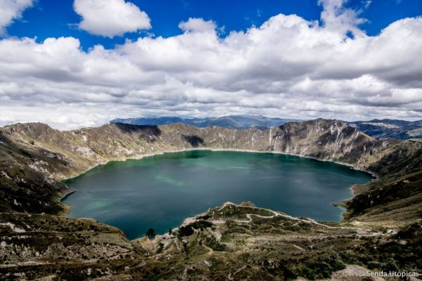
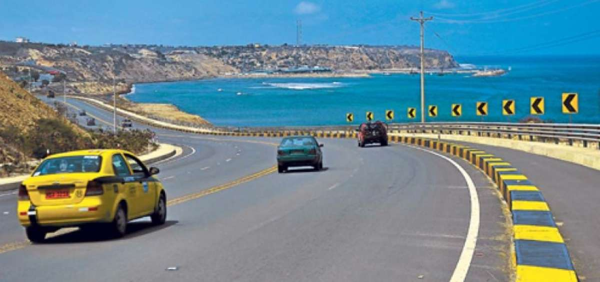

Viajar en Moto en Ecuador

Cuando se planea viajar en moto, comúnmente la idea es hacer grandes recorridos para vivir experiencias nuevas, únicas, e inigualables; y la verdad es que no hace falta viajar en moto alrededor del mundo para sentir las emociones que la moto trae consigo, nuestro país tiene los paisajes necesarios para hacerlo. En otro post nos dedicaremos a hablar de viajes fuera de Ecuador, primero nuestra tierra.
Somos privilegiados por tener un país, que en 4 horas podemos ir de 0 msnm a 4000 y luego llegar a mini paraísos a 2000 msnm, desde costa, pasando por los andes y llegando al oriente, tenemos diversidad de climas, paisajes, y tipos de carretera para cumplir con nuestro cometido
Ahora bien, ya definido el destino, debes hacer un balance y determinar factores como la cantidad de dinero con la que cuentas, rutas, hospedajes, días de camino, climas y temporadas.
Todo esto te ayudará a evitar inconvenientes, y a seleccionar adecuadamente cosas tan importantes, como los accesorios para moto que llevarás, la chaqueta para moto o la chompa. para saber cual de nuestras chompas se adecua mejor a tu viaje visita: https://ridesafe77.com/categoria-producto/chompas/
A continuación mencionaremos una serie de destinos atractivos con los que cuenta Ecuador.
Y que seguramente te gustará conocer junto a tu grupo de moteros, consideraremos que partes desde la capital..

Ubicada a 180 km desde Quito, la preciosa laguna de Quilotoa, considerada una de las 15 mas bellas de origen volcánico en todo el mundo, ofrece una de las mejores vistas de una laguna desde un mirador en todo el país. Se ubica en la provincia de Cotopaxi, debes tomar la salida hacia el sur, atravesar Machachi por la E35 en la entrada a Latacunga tomar el desvío en el redondel del paso lateral hacia Ambato y la via te llevará hasta el Quilotoa, la ruta termina en la laguna. Las curvas que tiene esta via son perfectas para practicar o mejorar tu destreza sobre curvas en moto.
Tipo de camino: asfalto en toda la ruta. Clima: Frío – Templado, con posibilidad de neblina en los tramos del sector “El Chasqui” (si es que estas viajando desde Quito).

Es la ruta que ofrece una vista espectacular por el perfil costanero ecuatoriano, la ruta es desde la provincia de Manabi hasta Santa Elena, desde Quito se puede ir por la ruta: Santo domingo-Manta, y empezar desde el norte recorriendo hacia el sur.
La puedes dividir en 2 o tres tramos dependiendo de la cantidad de días que dispongas para viajar. Los platos y manjares que se pueden disfrutar se ajusta a todos los gustos y presupuestos, el hospedaje es fácil de encontrar debido a que son pueblos y ciudades turísticas y con una población muy acogedora para los que deciden viajar en moto. Tienes a elección mas de 15 playas todas con balnearios y lugares para comer y descansar. En este viaje dependiendo desde donde empieces, te recomendamos tener como parte del equipaje una chompa de verano como la Sahara de RS77. Tipo de clima: Calido – humedo en la costa, y frio en la transición andina. Tipo de camino: 95% asfalto, 5% lastre